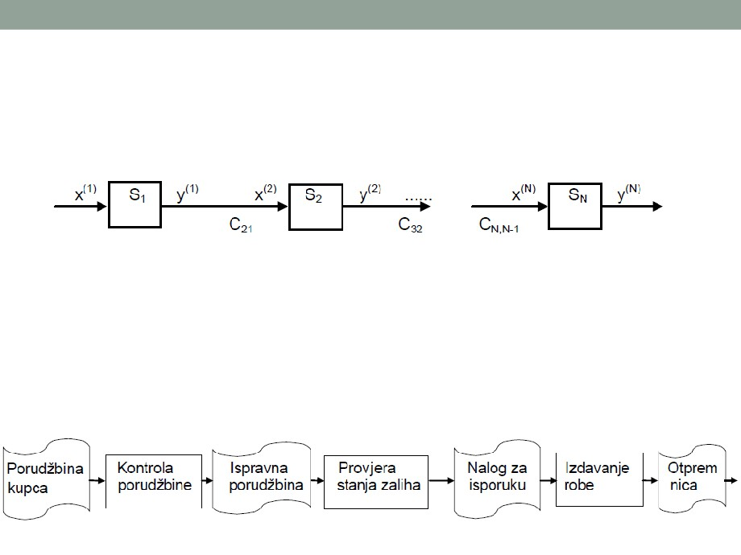

1. UVOD
Pojam, značaj, šema, faze razvoja
Osnovni pojmovi
• Sistem je funkcionalni skup objekata (elemenata) i njihovih
veza.
• Svaki od objekata u sistemu posjeduje niz svojstava (atributa)
• i veze između objekata sistema se mogu opisati nizom atributa
• Sistem intereaguje sa okolinom - uticaj okoline na sistem je
ulaz, uticaj sistema na okolinu je izlaz
• Podjela sistema:
• Po načinu kreiranja: prirodni i vještački
• Po stepenu apstrakcije: apstraktni i realni
• Po promjenljivosti u vremenu: statički i dinamički
• Po određenosti ponašanja: deterministicki i stohastički
• Po složenosti: prosti i složeni
• Po povezanosti sa okolinom: otvoreni i zatvoreni
• ...
Podatak i informacija se često koriste kao sinonimi, ali postoji suštinska razlika
između ova dva pojma
Podatak
Informacija
•
Podatak je jednostavna
•
Informacija predstavlja podatke koji
su stavljeni u određeni kontekst
neobrađena činjenica koja ima
(podatak je van konteksta, i
neko značenje
beskoristan sve dok ne prenosi neku
•
OBJEKTIVNO
informaciju)
•
SUBJEKTIVNO
•
Postoji u različitim formama:
• Informacija je usko vezana sa konceptima
broj, slika, riječ,...
kao što su značenje, znanje, percepcija,
• simbolički i formaliziran prikaz
instrukcija, komunikacija i sl.
činjenica, pojmova i instrukcija,
•
Informacija je rezultat analize i
pogodan za komuniciranje,
organizacije podataka na način da
interpretaciju i obradu uz pomoć
daje novo znanje primaocu
ljudi ili mašina.
informacije.
•
Podatak je opis svojstva nekog
•
Informaciju čine podaci kojima je
entiteta, zapažanje, činjenica,...
dato značenje
•
Značenje informacije može biti
•
Sami po sebi, podaci nam ne
korisno, ali i ne mora.
znače puno
• Jovan je IT inženjer koji ima 23 godine i
• Npr: Jovan, 800, 23 su podaci -
zaposlio se u firmi za početnu platu od
šta nam znače?
800 EUR.
Podaci i informacije
• Podaci su izolovane činjenice koje postaju informacije u
momentu njihovog korišćenja.
• Informacija je skup logički povezanih podataka, obrađenih i
organizovanih činjenica koje predstavljaju neko obavještenje.
• Informacija je rezultat obrade, manipulacije i organizovanja
podataka na način koji daje znanje primaocu.
Faktori kvaliteta informacija
• Tačnost
• Blagovremenost (aktuelnost)
• Relevantnost
• Sažetost (informacija treba da je što kraća)
• Svrsishodnost
• Razumljivost
• Ekonomičnost
• Iniciranje određene akcije
• ...
Šta je informacioni sistem?
• Informacioni sistem (IS) je skup međusobno povezanih
komponenti koje zajedno služe za prikupljanje,
preuzimanje, obradu, skladištenje i distribuciju informacija
u cilju lakšeg planiranja, kontrole, koordinacije, analize i
donošenja odluka u poslovnim organizacijama
Ulaz
Obrada
Izlaz
„Information systems are computer-based infrastructures, organizations,
personnel, and components that collect, process, store, transmit, display,
disseminate, and act on information“
• Informacioni sistem se, polazeći od opšte teorije
sistema i sistemskog pristupa, može definisati kao sreÿeni
skup metoda, procesa i operacija za prikupljanje, čuvanje,
obradu, prenošenje i distribuciju podataka u okviru jedne
organizacije, uključujući i opremu koja se u te svrhe koristi
i ljude koji se tim sktivnostima bave.
• Četiri osnovne komponente informacionog sistema su:
• operacije nad podacima
• metode i tehnologije obrade podataka
• sistemska analiza
• tehnike modelovanja
Ljudi
Tehnologija
Organizacija
• Ljudi - korisnici IS
• Tehnologija - sredstva pomoću kojih se podaci obrađuju i
organizuju za upotrebu u poslovanju:
• Hardver
• Softver
• Baza podataka
• Telekomunikacije
• Organizacija - skup funkcionalnih jedinica koje rade zajedno sa
zajedničkim ciljem - povećanje profita proizvodnjom robe i
pružanjem usluga
• Proizvodnja, prodaja, marketing, finansije, ljudski resursi,...
Osnovni resursi IS
• Osnovni resursi svakog informacionog sistema su:
• Ljudi - IT specijalisti i korisnici
• Hardver - računarski uređaji
• Softver - programi i procedure
• Podaci - baze podataka i znanja
• Mreže - medijumi za prenos i računarske mreže
• Obrada podataka obuhvata aktivnosti:
• Ulaz
• Obrada
• Izlaz
• Memorisanje
• Kontrola
Resursi IS - ljudski resursi
•
Ljudski resursi su neophodni za funkcionisanje informacionih sistema
- IT specijalisti i krajnji korisnici IS
•
IT specijalisti - ljudi koji razvijaju, implementiraju, ocjenjuju i održavaju
IS
• U kompaniji su organizovani u IC (Informacionom centru) i zavisno od podjele
rada, mogu biti:
• projektanti IS
• sistem analitičari
• programeri
• administratori baza podataka
• softver inženjeri
• specijalisti za hardver i mreže
• operateri i dr.
•
Krajnji korisnici - ljudi koji koriste informacioni sistem i njegove
informacione produkte u svakodnevnom radu (menadžeri, analitičari,
inženjeri, istraživači, komercijalisti, računovođe, tehničko osoblje i dr.)
• Većina zaposlenih u organizaciji su zapravo krajnji korisnici IS
Resursi IS - hardverski resursi
• U hardverske resurse spadaju cjelokupni računarski
resursi koji tehnički podržavaju rad IS:
• serveri baza podataka
• serveri aplikacija
• radne stanice
• periferne jedinice
• memorijske jedinice
• ...
Resursi IS - softverski resursi
• Softverski resursi uključuju sve vrste programskih
instrukcija i procedura:
• Operativni sistemi,
• Programski prevodioci,
• Sistemi za upravljanje bazama podataka,
• Statistički paketi,
• Korisnički programi (aplikativni softver)
• ...
• Predstavlja značajnu intelektualnu investiciju organizacije
• Niz procedura koje upućuju korisnika kako da koristi IS su
takođe značajan softverski resurs
Resursi IS - informacioni resursi
• Podaci, informacije i znanje su resurs ne samo IS, nego i
organizacije
• Ovaj resurs se često organizuje u:
• bazama podataka (podaci i informacije),
• dimenzionalnim bazama podataka u Data Warehouse (ekstrahirani
i agregirani podaci i informacije),
• bazama znanja, tzv. Knowledge Warehouse i dr.
Resursi IS - mrežni resursi
• Resursi računarskih mreža (lokalnih i globalnih) sa
mrežnom opremom (aktivnom i pasivnom), uređajima i
instalacijama, su okosnica telekomunikacionog
podsistema informacionog sistema
• Ovi resursi uključuju:
• komunikacione medijume (koaksijalni kablovi, fiber-optički kablovi,
kablovi sa upreenim paricama, radio linkovi i dr.),
• mrežnu opremu (ruteri, svičevi, modemi, AP i dr.),
• komunikacioni kontrolni softver
Ko izučava i koristi IS?
• Na tehničkim fakultetima informacioni sistemi se
proučavaju iz ugla projektanta sistema, projektanta baza
podataka, programera, održavanja, računarske
povezanosti,...
• Na fakultetima društvenih nauka informacioni sistemi se
proučavaju iz ugla mogućnosti podrške poslovnim
procesima.
• Informacioni sistemi nisu isto što i računarski sistemi
Namjena računara
• Upravljanje organizacijom uključuje donošenje odluka i
rješavanje problema - neophodne informacije i znanja
• Informacioni sistemi obezbjeđuju informacije - iz izvora unutar
organizacije i izvora izvan organizacije
• Namjena računara:
• Prvobitno elektronska obrada podataka (EOP)
• Znatno veće mogućnosti - nove svrhe informacionih sistema:
• Upravljački informacioni sistemi (Management Information Systems - MIS) -
sistemi koji prenose, čuvaju i obrađuju podatke potrebne za upravljanje
• Sistemi za podršku odlučivanju (Decision Support Systems - DSS) - sistemi
koji pomažu donošenje odluka
• Ekspertni sistemi (ES) - u domenu vještačke inteligencije
• Razvoj automatizovane kancelarije (Office Automation - OA) -
• Svi predstavljaju tzv. informacioni sistem zasnovan na računaru
(Computer-Based Information System - CBIS)
Razlika između računarske i IS pismenosti
Analitičke i
vještine rješavanja
problema
IS
pismenost
Organizacione
IT
vještine
vještine
Pristup rješavanju problema
Vrste informacionih sistema
• Dosadašnji razvoj informacionih tehnologija i nformacionih
sistema organizacije tekao je od ranih sistema
automatske obrade podataka do DW
• Gruba podjela IS na:
• operativne informacione sisteme i
• sisteme za podršku menadžmenta/menadžerski IS
Operativni informacioni sistemi
•
IS namijenjeni za obradu podataka nastalih u poslovnim i tehnološkim
procesima i koji obezbjeđuju podatke i informacije za poslovne operacije
su operativni IS
•
Njihova osnovna uloga je podrška unapređenju i efikasnom izvršavanju
poslovnih transakcija, kontrola tehnoloških procesa, automatizacija
poslova u kancelarijama, podrška u kreiranju, distribuciji i korišćenju
znanja, podrška komunikaciji i saradnji u organizaciji, formiranje i
održavanje integralne baze podataka organizacije,...
•
OLTP sistemi (On Line Transaction Procesing System)
• omogućavaju automatizaciju odvijanja poslovnih procesa, aktivnosti, poslova, radnih
zadataka i operacija
• trenutno obrađuju podatke nastale u poslovnim transakcijama (mogući milioni
različitih poslovnih transakcija dnevno) i automatski ažuriraju velike baze podataka
• Tipični poslovni procesi: obrada porudžbenica, fakturisanje, kontrola zaliha, obrada
zarada, prodaja robe u trgovinskim objektima, obrada transakcija u bankarskom
poslovanju, ...
•
Predstavljaju osnovu za razvoj sistema koji podržavaju odlučivanje u
menadžmentu
•
Krajnji korisnici ovih sistema su stručnjaci različitih profila, operativni
menadžeri, administrativno i tehničko osoblje organizacije
Menadžerski informacioni sistemi
•
Menadžerski informacioni sistemi su sistemi podrške odlučivanju u menadžmentu
•
Mogu biti:
• MIS (Management Information Systems),
• DSS (Decision Support Systems),
• ESS (Executive Support Systems),
•
Najčešće su zasnovani na informacionim arhitekturama kao što su Data
Warehouse (DW) i KBS (Knowledge Based Systems)
•
MIS - klasični upravljački IS, koji pripada drugoj razvojnoj fazi IS
• Potreba da se menadžmentu na adekvatan način obezbijede neophodne informacije za
odlučivanje i upravljanje
• Kreiraju različite izvještaje
•
DSS - interaktivni informacioni sistemi koji se koriste sofisticiranim modelima
anlalize podataka, modelima odlučivanja i specijalizovanim bazama podataka sa
svrhom podržavanja procesa odlučivanja
• Razlika u odnosu na MIS, DSS omogućavaju menadžerima analitičko modelovanje, simulacije,
eksploracije mogićih alternativa i dr.
• Korisnik može mijenjati pretpostavke, postavljati nova pitanja, uključivati nove podatake i sl.
•
ESS - kategorija IS namenjena za podršku odlučivanju izvršnim menadžerima
(vrhovnom menadžmentu) kako bi zadovoljavali strategijske informacione potrebe
Menadžerski IS - uticaji na razvoj
• KBS - knowledge based system
• Znatan uticaj na razvoj IS su imala postignuća u oblasti vještačke
inteligencije (AI)
"Vještačka inteligencija je nauka koja čini da mašine obavljaju stvari
koje bi zahtijevale inteligenciju kada bi ih obavljao čovjek"
"Vještačka inteligencija je dio nauke o računarima usmjeren na
stvaranje i proučavanje računarskih programa koji ispoljavaju
ponašajna svojstva koja mi identifikujemo kao inteligentna u ljudskom
ponašanju - znanje, rezonovanje, učenje, rješavanje problema,
razumijevanje jezika i dr."
• Među praktične aplikacije vještačke inteligencije u klasi sistema
zasnovanih na znanju (KBS), spadaju ekspertni sistemi (ES) -
računarski program koji se koristi znanjima radi oponašanja
ponašanja čovjeka - eksperta
Menadžerski IS - uticaji na razvoj
•
Data Warehouse (DW) - veliko, jedinstveno, integrisano, prilagodljivo i
bezbjedno spremište podataka koje obezbjeđuje infrastrukturnu
osnovu informacionih softverskih aplikacija u organizaciji, i koje sadrži
ka korisniku usmjerene, integrisane, vremenski varijantne, postojane
skupove relevantnih, konzistentnih podataka, lako dostupnih i
podložnih analizovanju i manipulisanju, za svrhu podržavanja procesa
odlučivanja u upravljanju organizacijom i njenim procesima.
•
Organizacije pribjegavaju gradnji data warehouse zato što raspoloživi
podaci u obliku u kojem su uskladišteni ne mogu efektivno i efikasno
da budu analizirani, kako bi se iz njih iscrpile informacije potrebne za
odlučivanje
•
Gradnjom DW organizacija sakuplja svoje podatke i smješta ih u
jedno skladište, organizujući ih na način koji obezbjeđuje laku i brzu
dostupnost podataka, kao i njihovu podložnost odgovarajućem
manipulisanju i analizi u cilju sticanja potrebnih relevantnih novih
informacija, pa i takvih koje će omogućiti nove uvide u procese kojima
se upravlja
Osnovne karakteristike sistema
• Jednoznačna identifikacija
• Kompleksnost
• Dinamičnost
• Zavisnost
• Stabilnost
• Adaptibilnost
Kriterijumi za klasifikaciju sistema
• Način nastanka
• Oblik postojanja
• Aktivnosti
• Predvidivost ponašanja
• Stabilnost
• Način organizovanja
• Povezanost s okruženjem
• Unutrašnji odnosi
• Stepen otvorenosti
• Kompleksnost
• ...
Šema informacionog sistema
• Model informacionog sistema - grafički prikaz
• Suština IS je baza podataka (ili sistem baza podataka)
koja sadrži međusobno povezane podatke kojima se
modeluju objekti, veze između objekata (entiteta) i
odgovarajući atributi (osobine) objekata i veza.
Podsistemi i interakcije
• Povezivanjem više podsistema u okviru sistema može se
formirati:
• otvoreni lanac povezivanja podsistema
• zatvoreni lanac povezivanja podsistema
• razgranati lanac povezivanja podsistema

Otvoreni lanac - šema i primjer
Y(1)=C21X(2)
Y(2)=C32X(3)
Y(N-1)=CN,N-1X(N)
Zatvoreni lanac - šema i primjer
Y(1)=C21X(2)
Y(2)=C32X(3)
Y(N-1)=CN,N-1X(N)
Y(N)=C1NX(1)
Razgranati lanac - šema i primjer
• Grananje ulaza
X1(4)=C41Y(1)
X2(4)=C42Y(2)
XN(4)=C4NY(N)
Razgranati lanac - šema i primjer
(1)
X(2)
=C21Y2
(1)
X(3)
=C31Y3
(1)
X(N)
=C4NYN
Grananje izlaza
Faze razvoja IS
1. PLANIRANJE
2. ANALIZA I DIZAJN
Identifikacija i definisanje problema
Najava izrade projekta
Analiza postojećeg informacionog sistema
Formiranje projektanskih timova
Definisanje ciljeva i zadataka IS
Definisanje informacionih potreba
Identifikacija strukture IS
Definisanje performansi sistema
Projektovanje logičke strukture baze podataka
Logičko projektovanje
Definisanje koncepcije tehničke podrške
Fizičko projektovanje
Definisanje modela organizaciono kadrovske
Priprema predloga implementacije projekta
podrške
Ocjena projektnih rješenja
Specifikacija potrebnih ulaganja
Izrada dokumentacije
Analiza izvodljivosti projekta
Utvrđivanje prioriteta i izbor projekta
3. IMPLEMENTACIJA
Planiranje realizacije projekta
Najava implementacije projekta
Prihvatanje ili odbijanje plana razvoja
Organizacija personala informacionog
sistema
Izbor i instalacija računarske opreme
4. FUNKCIONISANJE I ODRŽAVANJE
Izrada/nabavka softvera
Formiranje baze podataka
Obuka korisnika
5. VREDNOVANJE I KONTROLA
Zamjena sistema
Razvoj informacionog sistema
• Razvoj informacionog sistema
može se podijeliti u nekoliko faza,
koje se ređaju sekvencijalno (u
okviru linearnog životnog ciklusa),
ili su distribuirane među raznim
iteracijama iterativnog
(evolutivnog) životnog ciklusa
• Bez obzira na pristup, u razvoju
informacionog sistema treba
odgovoriti na četiri pitanja:
1.
Šta uraditi?
2.
U kom domenu?
3.
Kako?
4.
Kojom vještinom?
Šta uraditi?
• To je pitanje na koje korisnik daje odgovor, opisujući svoja
očekivanja od sistema, način interakcije sa sistemom i
različite aktere interakcije
• To je funkcionalni opis i to bez detalja implementacije
U kom domenu (okruženju)?
• To je pitanje čiji odgovor treba da sadrži opis domena -
okruženja u kome informacioni sistem treba da egzistira i
bitne, po aplikaciju, elemente domena
Kako?
• Odgovor na ovo pitanje se dobija u fazi dizajna, i rezultat
je projektantskog iskustva i vještine
• Projektovanje treba da učini mogućim korisnikova
očekivanja i želje izražene kroz prvo pitanje - šta uraditi,
uzimajući u obzir domen aplikacije i ograničenja
implementacije
Kojom vještinom?
• To je pitanje o neophodnim znanjima i vještinama za
izgradnju informacionog sistema - tehničkim,
organizacionim i sl.
Faze razvoja IS i proces projektovanja
• Redosljed i spisak aktivnosti u prve tri faze može biti
promjenljiv.
• Proces projektovanja IS može da se obavlja sa
operacijama koje bi se izvodile u skladu sa opisanim
fazama razvoja IS, odnosno po datom redosledu
(baziranom na sukcesiji koraka, od zahtjeva do
implementacije)
• Ovakav način izvođenja operacija naziva se linearni životni ciklus
• Nekoliko modela linaernog životnog ciklusa:
• Model tunela
• Model vodopada
Linearni životni ciklus
• Model tunela
• U projektima sa tunelskim pristupom nemoguće je znati
šta se dešava
• Razvoj napreduje, ljudi rade - često vrlo naporno, ali
nemaju pouzdane informacije o tome kako razvoj
informacionog sistema napreduje ili kakvog su kvaliteta
razvijeni elementi
Linearni životni ciklus
• Model vodopada
• Razvoj informacionog sistema je niz faza povezanih u
linearno izvršenje, od specifikacije i analize zahtjeva do
implementacije
• Svaka faza odgovara jednoj ili manjem skupu vrlo srodnih
aktivnosti
Evolucioni (iterativni) životni ciklus
• Životni ciklus informacionog sistema, zasniva se na jednostavnoj ideji:
kada je sistem suviše složen da se razumije, projektuje i implementira
u jednom pokušaju, bolje je implementirati ga iterativno, evolucijom
• Da bi se neki problemi razvoja IS prevazišli, projekat se često dijeli u
podsisteme
• Projektovanje IS po evolutivnom životnom ciklusu:
• Evolucioni pristup realizuje IS tako što razdvaja pojedine funkcije IS
i vrši njihovo isprobavanje
• Obično su to veoma jednostavne funkcije sa jednostavnim vezama
• Kada se sagleda obavljanje te funkcije vrši se izrada prototipa nove
funkcije IS koja je predlog rješenja za tu aktivnost u IS
• Ukoliko se prototip ne pokaže valjanim tada se vrši njegova
modifikacija
• Sledeća prototip funkcija je bolja od prethodne što liči na evoluciju
u prirodi
Evolucioni životni ciklus
• U iterativnom životnom ciklusu svaka iteracija predstavlja mini
vodopad na manjoj skali
• Ciljevi naredne iteracije se zasnivaju na evaluaciji prethodnih
iteracija
• Aktivnosti su povezane u mini vodopad čija je veličina
određena ciljevima same iteracije
Kombinovani životni ciklus
• Evolucioni pristup se naziva i metod probe i pokušaja.
• Mana evolucionog pristupa - pojedini segmenti IS se
posebno razvijaju, pa može da se dogodi da kada se dvije
funkcije spoje (a tada to već mogu biti složeni podsistemi)
dođe do nepoklapanja načina organizacije podataka.
• Stoga se neki dijelovi informacionog sistema moraju
projektovati globalno.
• Jedna od najčešće korišćenih tehnika koja prevazilazi
neke od nedostataka prethodna dva metoda životnog
ciklusa je kombinovana tehnika.
Kombinovani životni ciklus
• Kod kombinovanog životnog ciklusa:
• Na početku projektovanja neke faze se odrade linearno
(na globalnom nivou organizacije).
• Tipičan primjer je organizacija podataka, raspodjela
sredstava, dogovor o softveru i hardveru.
• Zatim se razlažu funkcije na najjednostavnije i realizuju
evolucionim pristupom.
• Kada se neka funkcija isprojektuje, prelazi se na
slijedeću funkciju koja može da uključuje prethodnu, ili
da ima veze sa prethodnom.
• Svaka sljedeća funkcija bi trebala biti složenija od
prethodne.